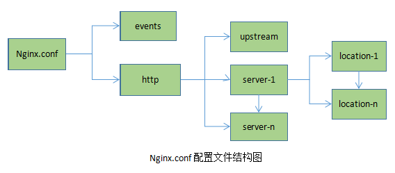

user www www; # Nginx的worker进程运行用户以及用户组
worker_processes 4; # 启动进程数,通常设置成和cpu的数量相等 或 auto
#worker_processes auto;
#以下参数指定了哪个cpu分配给哪个进程，一般来说不用特殊指定。如果一定要设的话，用0和1指定分配方式.
#这样设就是给1-4个进程分配单独的核来运行，出现第5个进程是就是随机分配了。
#worker_processes 4 #4核CPU
#worker_cpu_affinity 0001 0010 0100 1000
worker_cpu_affinity auto; # 也可直接设置为 auto
error_log /home/wwwlogs/nginx_error.log crit; # 定义全局错误日志定义类型，[debug|info|notice|warn|crit]
pid /usr/local/nginx/logs/nginx.pid; # PID文件
#Specifies the value for maximum file descriptors that can be opened by this process.
# 一个nginx进程打开的最多文件描述符数目，理论值应该是最多打开文件数（ulimit -n）与nginx进程数相除，
# 但是nginx分配请求并不是那么均匀，所以最好与ulimit -n的值保持一致。
worker_rlimit_nofile 51200;
# 工作模式及连接数上限
events
{
# use [ kqueue | rtsig | epoll | /dev/poll | select | poll ];
# epoll模型是Linux 2.6以上版本内核中的高性能网络I/O模型，如果跑在FreeBSD上面，
# 就用kqueue模型。
use epoll;
worker_connections 51200; # 单个后台worker process进程的最大并发链接数
# worker工作方式：串行（一定程度降低负载，但服务器吞吐量大时，设置on使用并行方式）
# 默认 off 串行即可
multi_accept off;
# 当一个新连接到达时，如果激活了accept_mutex，那么多个Worker将以串行方式来处理，
# 其中有一个Worker会被唤醒，其他的Worker继续保持休眠状态；
# 如果没有激活accept_mutex，那么所有的Worker都会被唤醒，不过只有一个Worker能获取新连接，
# 其它的Worker会重新进入休眠状态，这就是「惊群问题」。
# 其实对于nginx来说，不需要考虑惊群问题，进程数就那么多，默认设置为 off 即可，不需要调成 on
accept_mutex off;
}
http
{
#文件扩展名与文件类型映射表
include mime.types;
#默认文件类型
default_type application/octet-stream;
# 服务器名字的hash表大小
server_names_hash_bucket_size 128;
#指定来自客户端请求头的hearerbuffer大小
client_header_buffer_size 32k;
#指定客户端请求中较大的消息头的缓存最大数量和大小。
large_client_header_buffers 4 32k;
#客户端请求单个文件的最大字节数
client_max_body_size 50m;
sendfile on; #开启高效传输模式。
#防止网络阻塞
tcp_nopush on;
keepalive_timeout 60; # 连接超时时间 ，单位是秒
tcp_nodelay on;
#FastCGI相关参数是为了改善网站的性能：减少资源占用，提高访问速度。
fastcgi_connect_timeout 300;
fastcgi_send_timeout 300;
fastcgi_read_timeout 300;
fastcgi_buffer_size 64k;
fastcgi_buffers 4 64k;
fastcgi_busy_buffers_size 128k;
fastcgi_temp_file_write_size 256k;
gzip on; # 开启gzip压缩
gzip_min_length 1k; #最小压缩文件大小
gzip_buffers 4 16k; #压缩缓冲区
gzip_http_version 1.1; #压缩版本（默认1.1，前端如果是squid2.5请使用1.0）
gzip_comp_level 2; #压缩等级 1-9 等级越高，压缩效果越好，节约宽带，但CPU消耗大
gzip_types text/plain application/javascript application/x-javascript text/javascript text/css application/xml application/xml+rss application/json;
#压缩类型，默认就已经包含text/html，所以下面就不用再写了，
#写上去也不会有问题，但是会有一个warn。
#前端缓存服务器缓存经过压缩的页面
gzip_vary on;
gzip_proxied expired no-cache no-store private auth;
gzip_disable "MSIE [1-6]\."; # IE6浏览器不启用压缩
#limit_conn_zone $binary_remote_addr zone=perip:10m;
##If enable limit_conn_zone,add "limit_conn perip 10;" to server section.
server_tokens off;
access_log off;
# 定义日志格式
log_format up_head '$remote_addr - $remote_user [$time_local] "$request" '
'$status $body_bytes_sent "$http_referer" '
'"$http_user_agent" "$http_x_forwarded_for" "deviceid: $http_deviceid"'
'"$request_body" $upstream_response_time "$request_time"';
include vhost/*.conf;
}server {
listen 80;
listen 443 ssl;
server_name www.test.com;
ssl_certificate /nginx/conf/https/www.test.com.crt;
ssl_certificate_key /nginx/conf/https/www.test.com.key;
root /www/www.test.com;
index index.html index.htm index.php;
location ~^/test.php {
default_type application/json;
return 404 '{404}';
access_log off;
}
location ~ ^/test/status(.*)$
{
default_type text/html;
access_log /log/nginx/access/dot.log;
return 200 '';
}
location / {
try_files $uri $uri/ /index.php?$query_string;
}
location ~\.php$ {
# 如果用到 sock 则值参考 unix:/var/run/php/php7.0-fpm.sock
fastcgi_pass unix:/tmp/php-cgi.sock;
fastcgi_index index.php;
fastcgi_param SCRIPT_FILENAME $document_root$fastcgi_script_name;
include fastcgi_params;
access_log /log/nginx/access/access.log up_head;
}
# 静态文件
location ~ .*\.(gif|jpg|jpeg|png|bmp|swf)$
{
expires 30d; # 对于静态文件，需要设置一个过期时间，
# 这样可以让这些资源缓存到客户端浏览器，
# 在缓存未失效前，客户端不再向服务期请求相同的资源，
# 从而节省带宽和资源消耗。
}
location ~ .*\.(js|css)?$
{
expires 12h;
}
location ~ /.well-known {
allow all;
}
location ~ /\.
{
deny all;
}
# 隐藏敏感文件
location ~ .*\.(txt|sql|md|json|lock)$
{
deny all;
}
access_log /alidata/log/nginx/127.0.0.1.log up_head; # 日志存储路径和日志格式，对应 log_format
error_log /alidata/log/nginx/nginx_error.log;
}